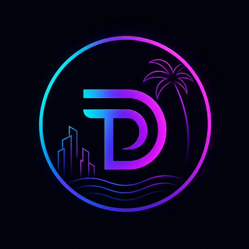
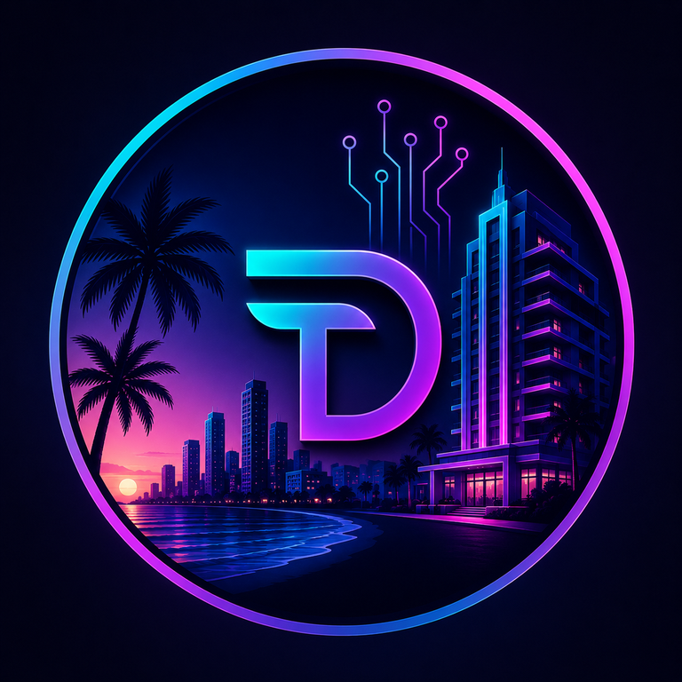

TikiDecoToken
Fixed supply token with pause controls, safer allowance adjustments, report hash publishing, and Safe owner control.
0xE4c1DE533440b411Be5C17883FF662e95a462097
Open on Sepolia Etherscan

TikiDeco
Ethereum Sepolia prototype
TIDE is a transparent token foundation for a future Miami Beach hospitality concept, built with fixed supply, vesting, Safe multisig ownership, treasury discipline, and public on-chain reporting.
Token identity
Neon coastline, art deco architecture, palm silhouettes, and circuit lines come together as a token emblem for the TikiDeco hospitality concept.
Deployed contracts
Fixed supply token with pause controls, safer allowance adjustments, report hash publishing, and Safe owner control.
0xE4c1DE533440b411Be5C17883FF662e95a462097
Open on Sepolia Etherscan
Cliff and linear vesting for long-term team, partner, community, and future perk allocations, administered by Safe.
0xc480565482af6B08A3b65D0C9aba985d6240702E
Open on Sepolia Etherscan
Allocation model
TIDE starts with a fixed supply and a clear allocation model. Vesting reduces short-term pressure while keeping project operations, community rewards, future hotel perks, and reserves visible.
Read tokenomicsRoadmap
Public materials
Clear boundaries
No. TIDE is currently a Sepolia testnet prototype. Sepolia tokens have no market value.
No. This is not a securities offering, investment advice, or a promise of profit.
Verified contracts, deployment records, tokenomics, white paper drafts, roadmap, and tests.
Yes. Switch to Ethereum Sepolia and import the TikiDecoToken contract address.